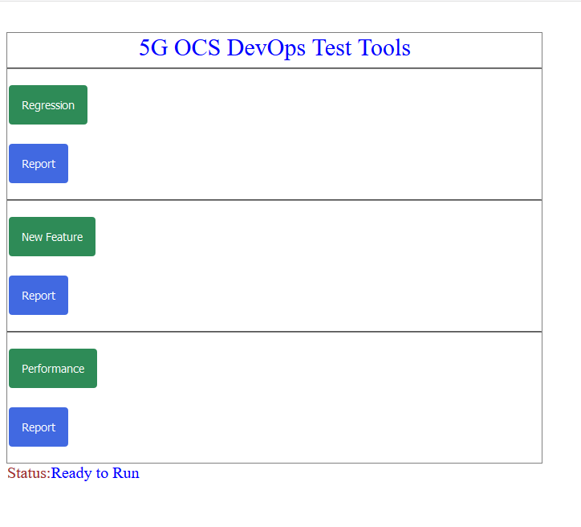

To access the Three-button UI, enter the following address in a web browser:
http://<IP.OF.MAESTRO>/admin/run-tests/
The following figure presents an example of the Three-button UI.
Figure: Three-button UI

You can run a Regression, New Feature or Performance test suite, but only one at a time, by clicking the corresponding button.
 Note:
Note:Once a test suite has been executed, you can click the corresponding Report button to navigate to the latest test report.